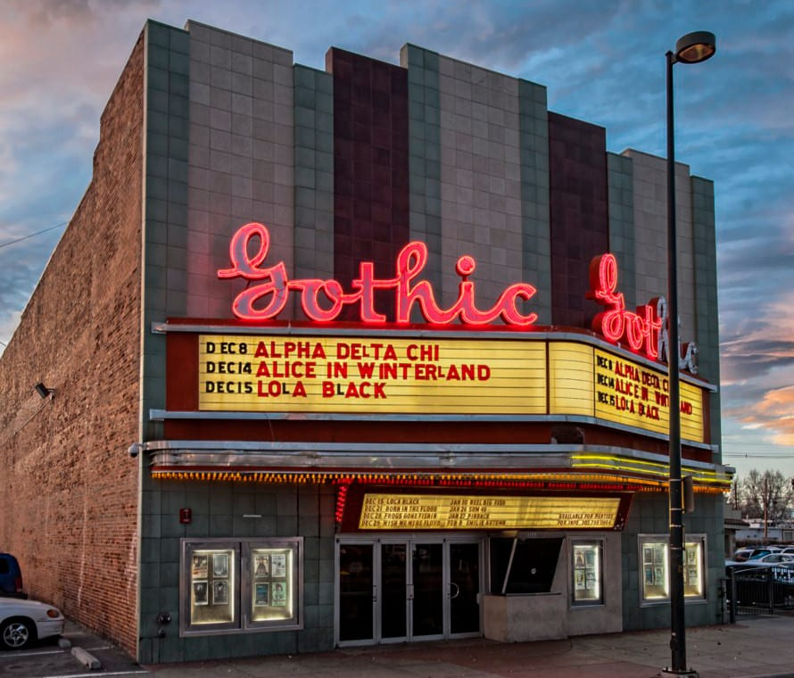

The Gothic Theatre · 3263 S. Broadway · Englewood, CO · Est. 1925
Englewood: Born Wild on Broadway
Long before Englewood was a quiet suburb tucked just south of Denver, it was a town with a reputation. In the late 1800s, the area known as Orchard Place — stretching along South Broadway — was described in colorful terms: seven saloons, a grocery store, two "sporting houses," cheap liquor, gamblers, and what one account called "fancy women." Shootings and knifings weren't uncommon. This wasn't a place for the faint of heart.
That same road — wide enough that early settlers simply called it "Broadway" — had been the spine of the region since Colorado Territory days. Denver boomed after the 1859 gold rush, and South Broadway became the artery connecting the city to the fertile land below, drawing homesteaders, merchants, and yes, gamblers.
By 1903, a group of pioneer women led by Mrs. Jacob Jones had seen enough. They launched a campaign to transform Orchard Place into a proper community, and Englewood was officially incorporated. Civilization, it seemed, had arrived.
The Strip Takes Shape
Once Englewood cleaned up its act, South Broadway evolved into one of the most commercially vibrant corridors in the metro. At various points the street hosted a Ford Motor Company dealership, the Gates Rubber Company, the Bredan Creamery, and even the stables for the Overland Park Race Track. These were industrial anchors that gave the neighborhood its working-class backbone.
In 1906, the old saloon grounds were reimagined entirely. The former Fiske Gardens became Tuileries Amusement Park — a sprawling entertainment destination in the 3400 block of South Broadway complete with apple orchards, a lake, and a dance floor. By 1917 the National Film Company had purchased the property; that dance floor made a perfect movie studio, and Englewood briefly brushed with Hollywood.
The Englewood Theatre opened in 1912 at 3460 South Broadway, showing silent films and hosting live performers singing "illustrated songs" — a performer would flip illustrated boards in time with music played live on stage. It was spectacle for a pre-radio, pre-television world. People loved it.
The Gothic Opens Its Doors: 1925
Then came the marquee.
The Gothic Theatre, at 3263 South Broadway, opened in 1925 as an Art Deco cinema palace — sleek geometric lines, ornate interior detailing, and a glowing marquee that signaled something special was happening inside. It was also a genuine first: the Gothic was the first cinema in the greater Denver area to show "talkies" — sound films — ushering audiences into a new era of entertainment.
For decades, Hollywood's best played on that screen. Dramas, musicals, westerns, slapstick comedies — the Gothic was Englewood's window to the world.
"It's immediately recognizable. As soon as you walk through the door, you will notice that this venue is unlike any other."
— Kevin Anderson, General Manager, Gothic TheatreThe Dark Years & a Rock 'n' Roll Resurrection
By the late 20th century the Gothic had fallen into disrepair. Previous owners struggled, the venue closed, and the building sat largely abandoned — dark, dirty, a faded echo of its former glamour.
But that darkness had its own magnetism.
A young, scruffy Kurt Cobain loaded gear into the then-abandoned Gothic Theatre. That night, Nirvana — Cobain, Krist Novoselic, and Dave Grohl — took the stage opening for Dinosaur Jr. The set included one of the very first public performances of a song Cobain had written just two weeks earlier: "Smells Like Teen Spirit." Nobody in the room knew what they were witnessing.
Other acts passed through in those raw, unrenovated years — Red Hot Chili Peppers, Beastie Boys, Alice in Chains, Soundgarden, Skinny Puppy, Sonic Youth — all before Denver had other mid-sized venues like the Bluebird, the Ogden, or the Fillmore. The Gothic was the only room in town: unrenovated, dirty, and perfect for the alternative scene coming to life.
In 1998, two friends who recognized the building's potential invested in a full restoration, hiring artists and designers to bring the Gothic back to life. On June 23, 1999, the Rebirth Brass Band from New Orleans played the first official show of the new era — a fitting, soulful way to reopen a house of music.
A Thousand Nights of Music
Since its revival the Gothic has hosted an astonishing roster of artists. Today, under the management of AEG Live (which took over in 2013), the venue hosts roughly 130 live performances per year. Its capacity of just under 1,000 makes every show feel genuinely close — the Art Deco bones unchanged, the same architectural details that dazzled filmgoers in 1925 now framing mosh pits and standing crowds.
Englewood's unique regulations also give the Gothic a rare edge: it can legally sell tickets to shows running until 4 a.m. — a near-impossibility in the broader metro. Artists descending from Red Rocks Amphitheatre often stop at the Gothic for late-night aftershow sets, creating the kind of spontaneous, legendary evenings that live music fans chase for years.
Broadway Today: Antique Row to Guitar Shops
The stretch of South Broadway running north from Englewood into Denver is a living timeline. The old commercial buildings that once housed Ford dealerships and rubber factories now shelter antique dealers, vintage clothing stores, record shops, breweries, art galleries — and right in the mix, Coal Creek Guitars, carrying on the tradition of craft and music that has defined this corridor for over a century.
Antique Row, spanning roughly between Alameda and Evans, once boasted over 100 merchants across seven blocks. It's evolved and gentrified, but its bones remain: historic storefronts, unexpected finds, and the sense that this particular stretch of pavement has seen everything.
South Broadway isn't polished. It isn't a mall. It's a street that has survived saloons, silent films, punk shows, and gentrification — and it's still here, still loud, still alive.